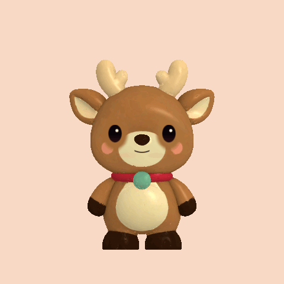
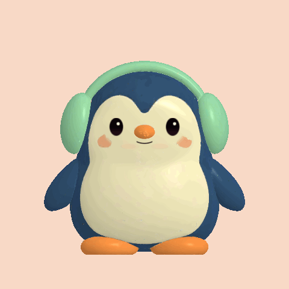
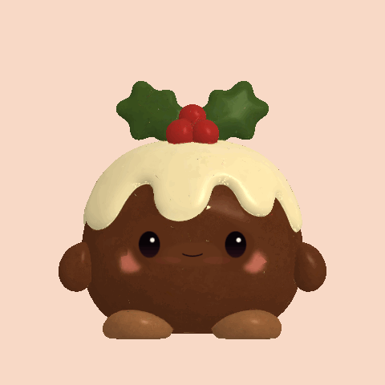

ReinySolstice Glow · rare finishHoof hello · Antler nod · Happy prance · Reindeer leap · Shy bowFinishTemperamentExpression poseRestTapSignature
GuinPolar Glow · rare finishFlipper hello · Earmuff wiggle · Cozy waddle · Happy hop · Cozy dipFinishTemperamentExpression poseRestTapSignature
BundyHolly Glow · rare finishLittle wave · Holly wobble · Pudding jiggle · Sweet hop · Thank-you bowFinishTemperamentExpression poseRestTapSignature